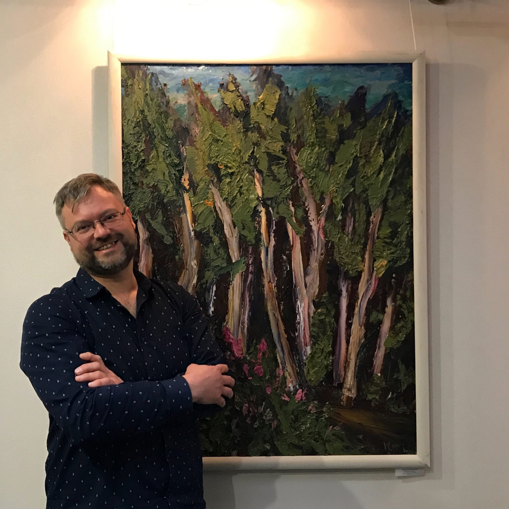

Родился 21 сентября 1975 года в городе Петрозаводске. В 1996 году окончил художественно-графическое отделение Педагогического училища №2 г. Петрозаводска.
Основные виды деятельности: живопись, графика.
Член творческого союза художников (2002–2011 гг.). Член Союза художников России (с 2010 г.).
Участник многочисленных групповых, республиканских, межрегиональных, международных и персональных выставок.
Живет и работает в Петрозаводске.

Выставки
«КУЛЬТОВЫЕ КАМНИ КАРЕЛИИ»
Петрозаводск, октябрь 1996 г.
Живопись (И. Растатурин, В. Манин)
Зал Коллегий Министерства культуры РК, октябрь 1997 г.
«Кивач»
Петрозаводск, 1998 г.
«ЧЁРНЫЙ КВАДРАТ» выставка в рамках 1-й международной триеннале визуальных искусств «Отпечатки»
г. Петрозаводск, медиа-центр «VЫХОД», 2000 г.
«ДРУГИЕ ХУДОЖНИКИ» (И. Растатурин, И. Монахов)
г. Петрозаводск, Дом куклы Т. Калининой, октябрь 2002 г.
Выставка живописи (И. Растатурин, Д. Учуваткин, А. Стародубцев)
г. Петрозаводск, СТД, апрель 2003 г.
«СЕВЕРО-ЗАПАД РОССИИ»
г. Петрозаводск, март-апрель 2006 г.
«СЕВЕРО-ЗАПАД РОССИИ»
г. Санкт-Петербург, май 2006 г.
«ДЕБЮТ» — выставка живописи и графики (И. Соболева, Н. Смирнова, Е. Кукушкин, И. Растатурин)
г. Петрозаводск, Городской выставочный зал, октябрь-ноябрь 2006
«ЛЕВОЕ ФОЙЕ» – серия выставок (с группой петрозаводских художников)
г. Петрозаводск, Национальный театр Карелии, 2006 – 2008 гг.
«ДЕЖА ВЮ. ВИЗУАЛЬНАЯ ЦИТАТА В СОВРЕМЕННОМ ИСКУССТВЕ»
г. Петрозаводск, Музeй изобразительных искусств РК, 2007 г.
«ПЯТИЛЕТКА» – отчётная выставка творческого союза художников, Городской выставочный зал
г. Петрозаводск, март 2008 г.
ATVIRAI — Международная выставка современного искусства
г. Алитус, Литва, июнь 2008, июль 2009 г.
«ХУДОЖНИК И ВРЕМЯ» — персональная выставка
г. Петрозаводск, Законодательное собрание РК, апрель 2008 г.
«ИЛЬЯ РАСТАТУРИН. 10 ЖИВОПИСНЫХ ЭТЮДОВ» - персональная выставка
г. Петрозаводск, медиа-центр «VЫХОД», сентябрь–октябрь 2008 г.
АКВАБИЕННАЛЕ – 3-я Международная выставка акварели
г. Петрозаводск, Городской выставочный зал, сентябрь–октябрь 2008 г.
«НОВЫЕ ИМЕНА»
г. Санкт-Петербург, Музей нонконформистского искусства, 2013 г.
ИЛЬЯ РАСТАТУРИН, АРТЁМ СТАРОДУБЦЕВ, СЕРГЕЙ ТЕРЕНТЬЕВ, ЮЛИЯ ШУМИЛОВА
г. Петрозаводск, Городской выставочный зал, октябрь–ноябрь, 2014 г.
«НЕ ТОЛЬКО КОШКИ»
г. Петрозаводск, Городской выставочный зал, июль 2015 г.
«ЛИКИ ГОРОДА»
г. Петрозаводск, Фойе Большого зала консерватории, сентябрь–декабрь 2015 г.
«ЭФФЕКТ ДОМИНО»
г. Петрозаводск, Городской выставочный зал, март 2016 г.
«VITA ПРЕДМЕТА»
г. Петрозаводск, Музeй изобразительных искусств РК, март–май 2016 г.
«СОВРЕМЕННОЕ ИСКУССТВО ДЛЯ ВСЕХ»
г. Петрозаводск, Музeй изобразительных искусств РК, май 2016 г.
«ТАЙНА ЦВЕТКА»
г. Петрозаводск, Музeй изобразительных искусств РК, март 2018 г.
«КАК РОЖДАЕТСЯ ИСКУССТВО»
Музeй изобразительных искусств РК, февраль–март 2019 г.
«РОССИЯ» XIII Всероссийская художественная выставка
г. Москва, Центральный дом художника, февраль–март 2019 г.
«АРТЕМ СТАРОДУБЦЕВ, ИЛЬЯ РАСТАТУРИН, НИКИТА РЫБИН. Живопись, графика»
г. Петрозаводск,
Городской выставочный зал, ноябрь–декабрь 2019 г.
«СТРАНА ЗА ОНЕГОЙ» выставка произведений карельских художников
Выставочный зал МОСХ России, 27.02 – 13.03.2020, г. Москва
«КРАСКИ ЛЕТА». Илья Растатурин. Живопись.
Фойе Большого зала Петрозаводской консерватории. Октябрь 2020 – Май 2021
Работы находятся в коллекциях Музея изобразительных искусств Республики Карелия, Музея нонконформистского искусства г. Санкт-Петербурга, в частных коллекциях России, Финляндии, Германии.